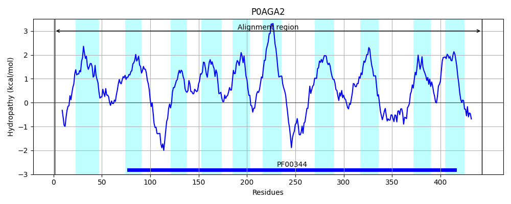
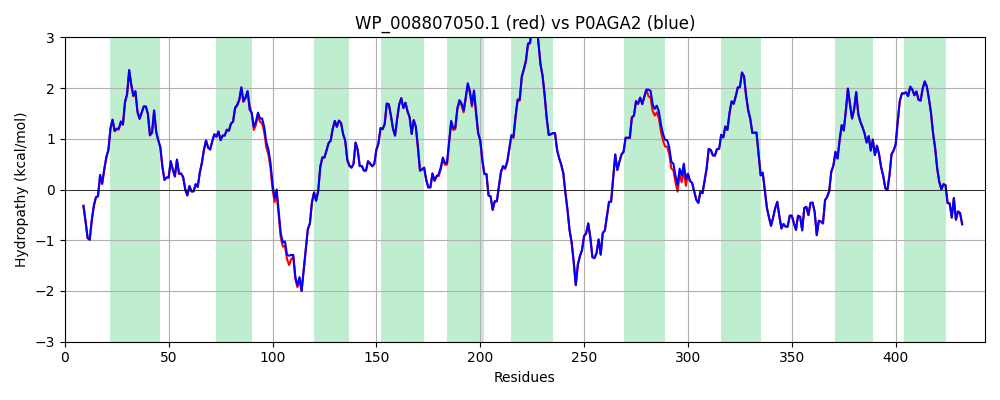

Hit Accession: P0AGA2
Hit TCID: 3.A.5.1.1
Hit Description: gnl|BL_ORD_ID|8856 gnl|TC-DB|P0AGA2|3.A.5.1.1 Preprotein translocase subunit secY - Escherichia coli.
Mach Len: 443
e:0.000000
Query TMS Count : 10
Hit TMS Count: 10
TMS-Overlap Score: 10.200000
Predicted Substrates:CHEBI:8526;protein polypeptide chain
BLAST Alignment:
Score: 2196 , Bit scores: 850 bits, E-value: 0.0e+00, Alignment length: 443, Percentage identity: 98
Query: 1 MAKQPGLDFQSAKGGLGELKRRLLFVVGALIVFRIGSFIPIPGIDAAVLAKLLEQQRGTIIEMFNMFSGGALSRASIFALGIMPYISASIIVQLLTVVYQPLAELKKEGESGRRKISQYTRYGTLVLAIFQSIGIATGLPNMPGMQGLVINPGFAFYFTAVVSLVTGTMFLMWLGEQITERGIGNGISILIFAGIVAGLPPAIAHTIEQARQGDLHFLLLLLVAVLVFAVTFFVVFVERGQRRIVVNYAKRQQGRRVYAAQSTHLPLKVNMAGVIPAIFASSIILFPATITSWFGGGTGWNWLTTISLYLQPGQPLYVLLYASAIIFFCFFYTALVFNPRETADNLKKSGAFVPGIRPGEQTAKYIDKVMTRLTLVGALYITFICLIPEFMRDAMKVPFYFGGTSLLIVVVVIMDFMAQVQTLMMSSQYESALKKANLKGYGR 443
MAKQPGLDFQSAKGGLGELKRRLLFV+GALIVFRIGSFIPIPGIDAAVLAKLLEQQRGTIIEMFNMFSGGALSRASIFALGIMPYISASII+QLLTVV+ LAE+KKEGESGRRKISQYTRYGTLVLAIFQSIGIATGLPNMPGMQGLVINPGFAFYFTAVVSLVTGTMFLMWLGEQITERGIGNGISI+IFAGIVAGLPPAIAHTIEQARQGDLHFL+LLLVAVLVFAVTFFVVFVERGQRRIVVNYAKRQQGRRVYAAQSTHLPLKVNMAGVIPAIFASSIILFPATI SWFGGGTGWNWLTTISLYLQPGQPLYVLLYASAIIFFCFFYTALVFNPRETADNLKKSGAFVPGIRPGEQTAKYIDKVMTRLTLVGALYITFICLIPEFMRDAMKVPFYFGGTSLLIVVVVIMDFMAQVQTLMMSSQYESALKKANLKGYGR
Sbjct: 1 MAKQPGLDFQSAKGGLGELKRRLLFVIGALIVFRIGSFIPIPGIDAAVLAKLLEQQRGTIIEMFNMFSGGALSRASIFALGIMPYISASIIIQLLTVVHPTLAEIKKEGESGRRKISQYTRYGTLVLAIFQSIGIATGLPNMPGMQGLVINPGFAFYFTAVVSLVTGTMFLMWLGEQITERGIGNGISIIIFAGIVAGLPPAIAHTIEQARQGDLHFLVLLLVAVLVFAVTFFVVFVERGQRRIVVNYAKRQQGRRVYAAQSTHLPLKVNMAGVIPAIFASSIILFPATIASWFGGGTGWNWLTTISLYLQPGQPLYVLLYASAIIFFCFFYTALVFNPRETADNLKKSGAFVPGIRPGEQTAKYIDKVMTRLTLVGALYITFICLIPEFMRDAMKVPFYFGGTSLLIVVVVIMDFMAQVQTLMMSSQYESALKKANLKGYGR 443 | Protein Hydropathy Plots: |
|---|
 |  |
Pairwise Alignment-Hydropathy Plot:
|
|---|
|  |